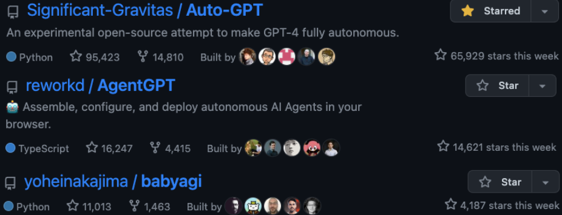

Ready to explore beyond ChatGPT?…
Obtain the Code
The code used in this blog post can be accessed in my GitHub Repo:
Introduction
OpenAI’s GPT models are state-of-the-art language models that have revolutionized the field of natural language processing.
This tutorial provides a guide for using simple and easy to use Python functions to interact with the OpenAI API, enabling you to harness the power of GPT models directly in your IDE terminal and build into your own products.
Prerequisites
Before diving into the tutorial, there are a few prerequisites you’ll need to fulfill in order to successfully use the Python functions provided in the GitHub repository to access the OpenAI API.
OpenAI API Key and Organization ID
To use the OpenAI API, you must have an API key and Organization ID. These credentials allow you to authenticate with the API and access its features. To obtain an API key and Organization ID, follow these steps:
- Visit the OpenAI Developer Dashboard.
- Sign up for an account or log in if you already have one.
- Once logged in, navigate to the API Keys section.
- Obtain your API key and Organization ID, as you’ll need them in the next step.
Setting Up the secrets.py File
After obtaining your API key and Organization ID, you’ll need to create a file named secrets.py in the same directory as the gpt.py file from the GitHub repository. This file will store your API credentials, allowing the Python functions to authenticate with the OpenAI API.
To create the secrets.py file, follow these steps:
- In the same directory as the
gpt.pyfile, create a new file and name itsecrets.py. - Open the
secrets.pyfile in your favorite text editor or IDE. - Define two variables, API_Key and Organization_ID, with your OpenAI API key and Organization ID as their respective values. Replace ‘your_api_key_here’ and ‘your_organization_id_here’ with the actual credentials you obtained from the OpenAI Developer Dashboard. Your
secrets.pyfile should look like this:
API_Key = 'your_api_key_here'
Organization_ID = 'your_organization_id_here'- Save and close the
secrets.pyfile
Now that you have your API credentials stored in the secrets.py file, the Python functions will be able to access the OpenAI API, and you can proceed with the rest of the tutorial.
Python Functions Overview
In this section, we’ll go over the two primary functions provided in the gpt.py file: gpt() and gpttxt(). These functions allow you to interact with the OpenAI API to generate responses from the GPT model.
GPT Class
The GPT class provides a callable function, gpt(), that takes a string as input and returns the generated response from the OpenAI API as a string. This function is ideal for generating responses to single prompts or questions. The code for the GPT class is as follows:
class GPT:
def __call__(self, question):
model = "gpt-3.5-turbo"
response = openai.ChatCompletion.create(
model=model,
messages=[
{"role": "system", "content": "You are the worlds best software engineer."},
{"role": "user", "content": question},
],
temperature=0.9,
max_tokens=2048,
top_p=0.9,
n=1,
)
return response.choices[0].message.contentGPTTXT Class
The GPTTXT class provides a callable function, gpttxt(), that takes a file path (pointing to a .txt file) as input and returns the generated response from the OpenAI API as a string. This function is ideal for generating responses to prompts or questions contained in a text file. The code for the GPTTXT class is as follows:
class GPTTXT:
def __call__(self, input_file_path):
with open(input_file_path, 'r') as f:
input_string = f.read()
model = "gpt-3.5-turbo"
response = openai.ChatCompletion.create(
model=model,
messages=[
{"role": "system", "content": "You are the worlds best software engineer."},
{"role": "user", "content": input_string},
],
temperature=0.9,
max_tokens=300,
top_p=0.9,
n=1,
)
return response.choices[0].message.contentUsing the Functions
In this section, we’ll demonstrate how to use the gpt() and gpttxt() functions from the gpt.py file to generate responses from the OpenAI API.
The gpt() Function
To use the gpt() function, follow these steps:
- First, ensure that the
gpt.pyfile is in your project directory. - In your main Python script or terminal, import the gpt instance from the
gpt.pyfile:
from gpt import gpt- Call the
gpt()function with the desired input string (question or prompt). For example, to generate a response to the prompt “What is the meaning of life?”, use the following code:
response = gpt("What is the meaning of life?")
print(response)The gpttxt() Function
To use the gpttxt() function, follow these steps:
- Ensure that the
gpt.pyfile is in your project directory. - In your main Python script or terminal, import the gpttxt instance from the
gpt.pyfile:
from gpt import gpttxt- Insert text of interest into the
input.txtfile - Call the
gpttxt()function with the name of the text file as its argument. For example, to generate a response based on the content of theinput.txtfile, use the following code:
response = gpttxt('input.txt')
print(response)Note that instead of creating and printing a variable (e.g. response), you can directly use the function in the terminal.
Choosing the Right Model
When using the OpenAI API, it’s essential to choose the right model to generate high-quality responses. In this section, we’ll discuss how to select the appropriate model for your use case and how to configure the gpt() and gpttxt() functions to use the chosen model.
Available Models
OpenAI offers several GPT models that you can use with the API. Each model has its own characteristics and capabilities. Some available models are:
- gpt-3.5-turbo: The most advanced model, offering excellent response quality and speed. This model is recommended for most use cases.
- text-davinci-002: A powerful model that can generate high-quality responses but is slower and more expensive than gpt-3.5-turbo.
- text-curie-002: A model that offers a balance between response quality and cost.
- text-babbage-002: A model that generates good responses at a lower cost, suitable for applications with tight budgets.
- text-ada-002: The lowest-cost model that still produces reasonable responses, ideal for cost-sensitive applications.
You can find more information about the available models in OpenAI API model documentation.
Defining the GPT-X Model to Use
By default, both functions use the gpt-3.5-turbo model, which is recommended for most use cases. However, you can easily change the model used by these functions to suit your specific needs.
To change the model, modify the model variable in the __call__ method of the GPT and GPTTXT classes in the gpt.py file. For example, to use the text-curie-002 model, change the following lines:
In the GPT and GPTTXT classes:
model = "gpt-3.5-turbo"to
model = "text-curie-002"After making these changes, the gpt() and gpttxt() functions will use the specified model when making requests to the OpenAI API.
Customizing System Content Prompt
In the API request, you’ll notice that there is a system content prompt which is defined as:
messages=[
{"role": "system", "content": "You are the worlds best software engineer."},
{"role": "user", "content": question},
],The system content prompt provides initial context or instructions for the AI model. In this case, the prompt is set to “You are the worlds best software engineer,” which helps set the tone and context for the AI’s response. It informs the AI model to respond as if it is an expert in software engineering.
You can customize the system content prompt to better suit your needs or to set a different context for the AI model. For example, if you want the AI to respond as a knowledgeable data scientist, you can change the system content message to:
{"role": "system", "content": "You are an expert data scientist."},Or, if you want the AI to provide beginner-friendly explanations, you can change the message to:
{"role": "system", "content": "You are a software engineer who explains complex topics in simple terms."},To modify the system content prompt, simply replace the content value in the messages list with your desired context or instruction. Keep in mind that the AI’s response may vary depending on the context provided, so it’s essential to test and refine your prompt to achieve the desired output.
Customizing API Settings
In this section, we’ll briefly cover how to customize API settings to fine-tune the behavior of the gpt() and gpttxt() functions when making requests to the OpenAI API. Each of the following parameters can be adjusted within the openai.ChatCompletion.create method.
temperature: Controls the creativity of the generated responses. Higher values result in more randomness, while lower values make responses more focused and deterministic.
max_tokens: Controls the length of generated responses. Set a higher value for longer responses or a lower value for shorter responses.
top_p: Controls the diversity of generated responses. Lower values promote more diverse responses by filtering out less probable tokens.
n: Generates n number of responses. Useful if multiple responses are desired.
presence_penalty: Discourages the model from repeating previous responses by penalizing tokens that have already been generated in the conversation. Higher values reduce repetition. Default is 0, ranges between 0-1.
frequency_penalty: Encourages the model to generate more varied responses by penalizing tokens that have been used frequently in the conversation. Higher values reduce the frequency of common phrases. Default is 0, ranges between 0-1.
stop: A list of tokens that, when generated by the model, indicate that the response is complete and the model should stop generating additional tokens.
echo: A boolean parameter that, when set to True, causes the model to include the user’s message in its response.
prompt_token: A string that is added at the beginning of the user’s message when the echo parameter is True. This can be useful for formatting the output or providing additional context to the model.
response_prefix: A string that is added to the beginning of the model’s response. This can be useful for formatting the output or separating multiple responses when n is greater than 1.
Conclusion
Hope this was helpful!
If you made it this far, a hot topic right now is AutoGPTs, which I think the buzz has not hit mainstream just yet. In short, I currently view AutoGPTs as novel architectural designs linking up multiple LLMs together to create an “emergent-like” behavior to solve tasks.
Auto-GPTs can also be defined as seamlessly connecting LLM “thoughts” to autonomously accomplish any objective you assign.
The Paper and Twitter post that started it all:
A few very fast growing GitHub projects emerged around this concept:

Music Currently on Repeat: Gaming Chill Music